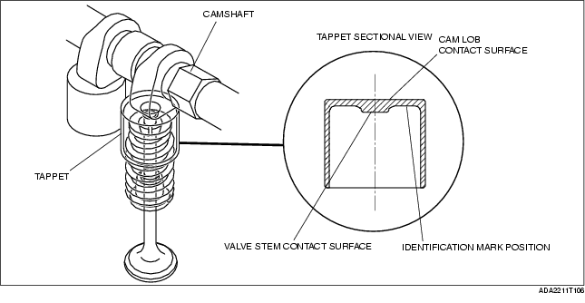

Tappet construction [ZY]
• The tappet is shimless and integrated with the shim.
• Friction has been reduced on the tappet surface by improvement in the precision of fineness finishing of the camshaft attachment surface.
• The valve clearance can be adjusted by replacing the tappet. The tappet type can be determined by its engraved identification mark.
